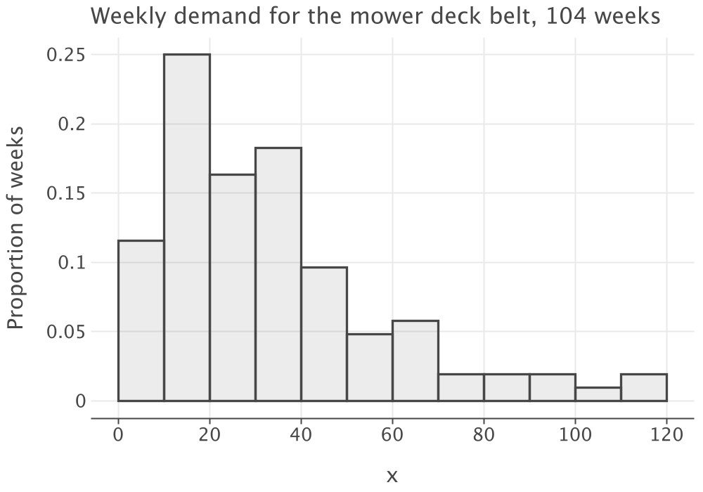
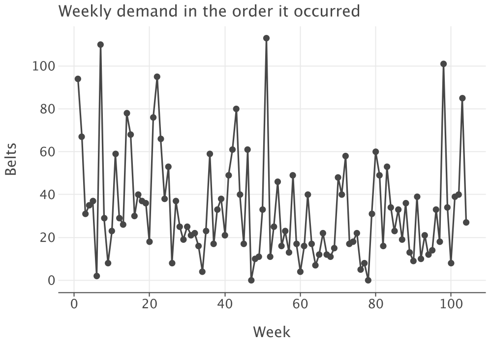
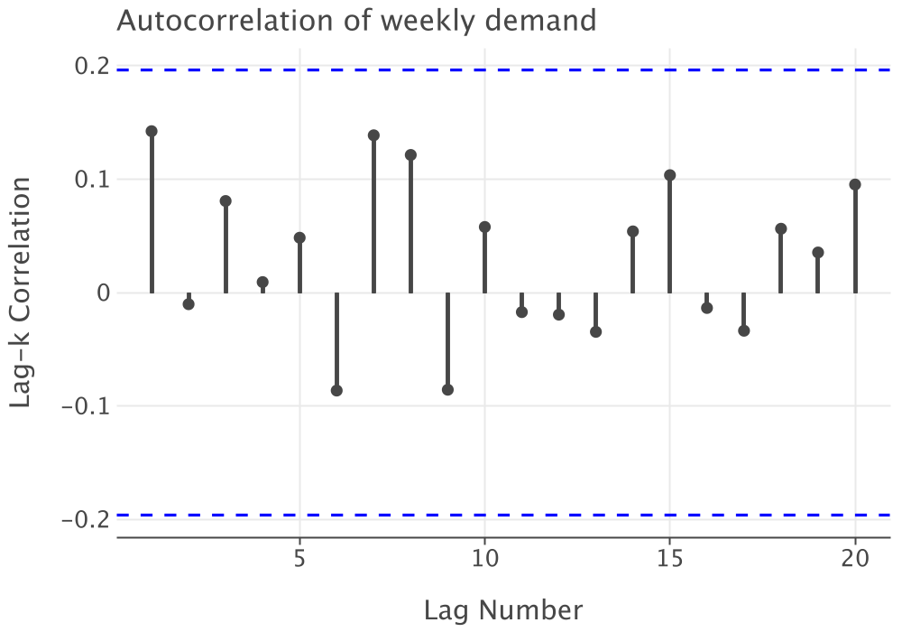
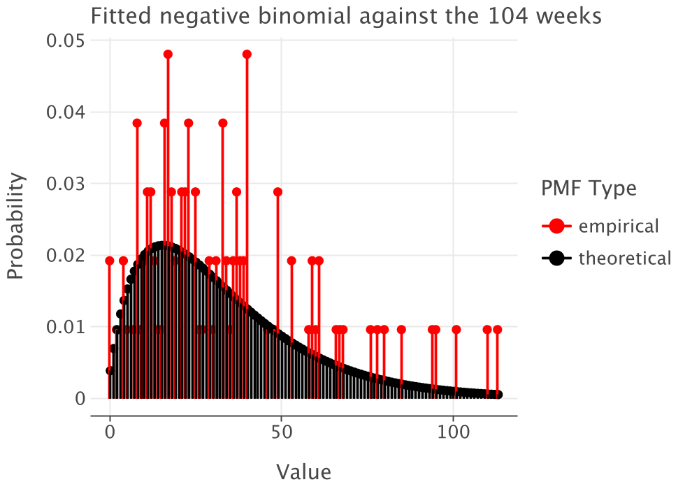

7 Single-Period Stochastic Inventory
After reading this chapter you should be able to:
- recognize a single-period problem and say why it is not a one-period version of a multi-period one
- work the ordering decision by hand as a marginal analysis
- characterize a demand history and fit a distribution to it
- formulate the newsvendor problem in both its cost and its profit forms
- derive and interpret the critical ratio
- solve the model for continuous and for discrete demand
- extend the model to a penalty cost and to stock already on hand
- estimate the answer by simulation, and say when that is worth doing
7.1 One Order, One Chance
Every model so far has known its demand. Chapter 3 and Chapter 4 took a constant rate, Chapter 5 let the rate vary by period and still knew it, and Chapter 6 computed it from a production plan. Assumption 5 of Section 6.8 is the one this chapter removes. From here on demand is a random variable, and the decision is made before it is observed.
We begin with the simplest such problem, in which the decision is made once.
Example 7.1 (The last order for the mower deck belt) The distributor of Chapter 5 has stocked the mower deck belt for years. The deck it fits is now out of production, so the seasonal pattern of Table 5.1 is over and what remains is steady replacement demand from owners of machines already in the field. The supplier is discontinuing the belt and has offered one last order.
What is stocked? One item, the belt.
What is the demand process? Weekly demand is random and no longer seasonal. It will run for about fourteen more weeks, until a redesigned deck reaches the dealers and the belt becomes unsellable.
When is inventory reviewed? Once. There is one decision and no second chance.
What triggers replenishment, and how much? Nothing triggers it. The distributor names a quantity now.
What happens to unmet demand? It is lost. A dealer who cannot get the belt from this distributor gets it elsewhere.
What costs are incurred, and when? The belt costs $50 and sells for $95. Belts left when the deck is withdrawn go to a scrap dealer at $12.
Three things about Example 7.1 distinguish it from everything before it.
There is no ordering cost in the model. Recall from Table 1.10 that \(k\) is the price of placing an order, and that the models of Chapter 3 through Chapter 6 trade it against holding. Here exactly one order is placed whatever its size, so \(k\) is the same under every decision. A constant added to every alternative cannot change which alternative is least, which is the argument of Section 1.4.1. Thus, \(k\) drops out, and with it the entire question those chapters were about.
Leftover stock has no future value. Recall from Section 1.2.7 that a single-period problem is not a multi-period problem with the number of periods set to one. In a multi-period problem a unit left at the end of a period is available at the start of the next, so the cost of having too many is a holding charge for one period. Here it is the whole loss on the unit, $50 paid against $12 recovered. That is why the trade-off is overage against underage rather than holding against ordering.
The two errors are priced differently, and neither is free. Order too many and the distributor loses $38 a belt. Order too few and it loses the $45 margin on each belt it could have sold. Notice that both are opportunity costs measured against the decision that could have been made, and that neither appears in any ledger. Section 1.4.2 is why.
7.1.1 Demand Is Not Sales
One distinction has to be made before any data are used, because it is the commonest error in this material and it is invisible in the answer.
- Let demand represent what customers would have bought.
- Let sales represent what they did buy.
The two differ whenever the shelf was empty. A week that sold 40 belts because 40 were on the shelf and a week that sold 40 because 40 were wanted look identical in a sales record. That is, sales are demand censored at whatever was available, and a history of sales understates both the average and the spread. It understates them most in exactly the weeks when the item mattered, because those are the weeks it ran out.
Recall from Section 2.3 that a stock record is only as good as the transactions behind it. This is the same point about a different record. An organization that wants to model demand has to record the demand it could not fill, and most do not. Where that record does not exist, the fitted distribution of Section 7.3 is biased low and every quantity computed from it is too small. You should say so when you report the answer, rather than let the arithmetic imply a precision the data do not carry.
The next section makes the decision without any distribution theory at all.
7.2 Working the Decision by Hand
Before any calculus, we can make the decision with arithmetic a planner would do on a whiteboard. The method is worth more than the answer, because it produces the rule that the rest of the chapter derives formally.
Let’s start with a sketch of demand rather than a fitted distribution. Suppose the distributor, asked for a judgment, offers five outcomes for total remaining demand and a probability for each.
| Demand \(x\), belts | 300 | 400 | 500 | 600 | 700 |
|---|---|---|---|---|---|
| \(P\{X = x\}\) | 0.15 | 0.25 | 0.30 | 0.20 | 0.10 |
| \(P\{X \le x\}\) | 0.15 | 0.40 | 0.70 | 0.90 | 1.00 |
The decision is how many belts to buy, in hundreds. Rather than evaluate every candidate, we ask a smaller question. Given that we have decided on some quantity, is one more hundred belts worth buying?
Buying one more hundred pays off when demand turns out to exceed the quantity we already have, which happens with probability \(P\{X \ge Q+100\}\), and each of those belts earns the $45 margin. It costs when demand falls at or below the quantity we already have, which happens with probability \(P\{X \le Q\}\), and each unsold belt loses $38. The extra hundred is worth buying when
\[ 45 \times 100 \times P\{X \ge Q+100\} \;>\; 38 \times 100 \times P\{X \le Q\} \tag{7.1}\]
Table 7.2 works Equation 7.1 one step at a time.
Step 1, from 300 to 400. Demand reaches 400 or more with probability 0.85, so the gain is \(45(100)(0.85) = \$3{,}825\). Demand stops at 300 with probability 0.15, so the loss is \(38(100)(0.15) = \$570\). The step is worth $3,255. Take it.
Step 2, from 400 to 500. Demand reaches 500 or more with probability 0.60, giving \(45(100)(0.60) = \$2{,}700\). Demand stops at 400 or below with probability 0.40, giving \(38(100)(0.40) = \$1{,}520\). The step is worth $1,180. Take it.
Step 3, from 500 to 600. Demand reaches 600 or more with probability 0.30, giving $1,350. Demand stops at 500 or below with probability 0.70, giving $2,660. The step loses $1,310. Stop.
| From | To | \(P\{X \ge \text{to}\}\) | Gain | \(P\{X \le \text{from}\}\) | Loss | Net |
|---|---|---|---|---|---|---|
| 300 | 400 | 0.85 | $3,825 | 0.15 | $570 | +$3,255 |
| 400 | 500 | 0.60 | $2,700 | 0.40 | $1,520 | +$1,180 |
| 500 | 600 | 0.30 | $1,350 | 0.70 | $2,660 | -$1,310 |
| 600 | 700 | 0.10 | $450 | 0.90 | $3,420 | -$2,970 |
Order 500 belts. Notice that 500 is more than the mean of 485. The distributor should plan to be left with belts more often than it plans to run out, because running out costs more per belt than scrapping does.
That the net column changes sign exactly once is not luck. Rearranging Equation 7.1, the step is worth taking while
\[ P\{X \le Q\} < \frac{45}{45+38} = \frac{c_{u}}{c_{u}+c_{o}} = 0.5422 \tag{7.2}\]
and the left side is a cumulative distribution function, which never decreases. Thus, once the test fails it fails for every larger quantity, and the rule is to order the smallest quantity whose cumulative probability reaches 0.5422. From Table 7.1 that is 500 belts, since \(F(400) = 0.40\) is short of it and \(F(500) = 0.70\) clears it.
That ratio is the answer to the whole chapter, and Section 7.6 derives it properly.
A check, and a reason to trust the shortcut. Costing all five candidates directly should agree, and it does.
| \(Q\) | 300 | 400 | 500 | 600 | 700 |
|---|---|---|---|---|---|
| Expected profit | $13,500 | $16,755 | $17,935 | $16,625 | $13,655 |
Table 7.3 peaks at 500, which is where Table 7.2 stopped and where Equation 7.2 pointed. Three routes, one answer. That check is worth performing the first time you use marginal analysis on a new problem, because the marginal argument is only valid when the expected profit has a single peak, and the direct calculation is what confirms it.
Notice what the hand method cost. Five outcomes, four steps, no distribution and no calculus. What it cannot do is tell the distributor anything between 400 and 500 belts, and the real decision is a number of belts rather than a number of hundreds. For that we need a distribution, and that is the next two sections.
7.3 Getting a Demand Distribution
Every model from here to the end of the book takes a demand distribution as an input, and the distribution carries more of the answer than the policy formula built on top of it does. This section fits one.
The subject has a book of its own. Appendix B of Simulation Modeling using the KSL (Rossetti 2026) gives the procedure in full, and Chapter 2 of the same text shows how to carry it out with the library this book’s code uses. What follows is that procedure applied to an inventory problem, with the one difference that matters here made explicit: demand for a spare part is a count, so every tool below is a discrete one.
The data. The distributor has 104 weeks of demand for the belt, recorded after the deck went out of production. They are in data/ch7-weekly-demand.csv in the course code project, two columns and a header:
week,demand
1,94
2,67
3,31Read them the way Section C.4 assumes they arrive, as a file whose contents you did not choose:
val df = DataFrame.readCSV(
File("data/ch7-weekly-demand.csv"),
colTypes = mapOf("week" to ColType.Int, "demand" to ColType.Int)
)
val history: IntArray = df.getColumn("demand").toList().map { it as Int }.toIntArray()Notice that the column types are named rather than left to be inferred. That is the practice Section 2.4.4 of (Rossetti 2026) follows, and the reason is that a column of counts silently read as text, or as real numbers, fails later and somewhere else.
7.3.1 Look Before You Model
Appendix B of (Rossetti 2026) opens its fitting procedure by plotting the data. A summary statistic answers a question you already thought to ask. A picture shows you the thing you did not.
Three plots answer three different questions, and the KSL draws all three.
val h = Histogram(Histogram.createBreakPoints(0.0, 12, 10.0), "Weekly demand")
h.collect(history.toDoubles())
h.histogramPlot().showInBrowser()
ObservationsPlot(history.toDoubles()).showInBrowser()
ACFPlot(history.toDoubles()).showInBrowser()What shape is it? Figure 7.1 is the histogram, on bins of ten belts. The break points are given rather than recommended, because ten belts to a bin is what the Data sheet of Chapter7Models.xlsx uses and a figure that disagrees with the spreadsheet beside it is worse than no figure.

Is it the same process throughout? Figure 7.2 plots the weeks in the order they occurred. What you are looking for is a trend, a level shift, or a season, and what is there is none of those: the series wanders about a constant level for two years. That matters because the season really is over, which is what Example 7.1 claimed and what this plot lets a reader check rather than accept.
Are the weeks independent? Figure 7.3 is the autocorrelation plot. Every lag falls inside the band, including the first, whose correlation is 0.1423 against a band of about \(\pm 1.96/\sqrt{104} = \pm 0.19\). Recall from Section B.5.5 that autocorrelated demand breaks the variance of a sum. Section 7.7 is about to add fourteen of these weeks together and treat their variances as adding, so this is the plot that licenses the arithmetic two sections from now.


Taken together the three plots say the weeks are independent, identically distributed, and strongly right-skewed. That is the finding that lets the rest of the section treat the 104 numbers as 104 draws from one distribution.
7.3.2 Summarize It
Now the statistics, which the KSL accumulates as the data are collected.
val s = Statistic("Weekly demand", history.toDoubles())
val b = BoxPlotSummary(history.toDoubles(), "Weekly demand")
println(s)
println(b)Statistic carries the first four moments and the lag one correlation; BoxPlotSummary carries the quartiles.
| Statistic | Value |
|---|---|
| Weeks observed | 104 |
| Mean | 33.2404 |
| Variance | 613.0387 |
| Standard deviation | 24.7596 |
| Coefficient of variation | 0.7449 |
| Variance to mean ratio | 18.4426 |
| Skewness | 1.2630 |
| Smallest week | 0 |
| First quartile | 16.0 |
| Median | 26.5 |
| Third quartile | 40.0 |
| Largest week | 113 |
| Weeks with no demand | 2 |
Read three things off Table 7.4 before going further.
The median sits well below the mean. A median of 26.5 against a mean of 33.24 says the distribution is right-skewed: most weeks are quiet and a few are very large. The skewness of 1.2630 is the same statement with a number attached, and Figure 7.1 is the same statement with a picture attached. Three routes, one finding.
Demand is a count. The weeks are whole belts, two of them are zero, and the quantity has no meaning between whole numbers. Thus, the families to consider are the discrete ones of Section C.1 and not the continuous ones of Section C.2.
For a count the diagnostic is the variance to mean ratio. Equation C.1 rather than the coefficient of variation, because the ratio is what each discrete family fixes or bounds. Here
\[ \mathit{VMR} = \frac{613.0387}{33.2404} = 18.44 \]
7.3.3 Hypothesize, Estimate, Test
Step 1, hypothesize. Equation C.1 does most of this step by itself. Recall from Section C.1.1 that the Poisson fixes \(\mathit{VMR} = 1\), and from Section C.1.3 that the binomial forces \(\mathit{VMR} < 1\). A ratio of 18.44 is near neither, and no choice of parameter repairs that, because in both families the variance is decided the moment the mean is estimated. What remains is Section C.1.2, the negative binomial, which admits any \(\mathit{VMR} > 1\) and which is the Poisson with its constant-rate assumption relaxed. That is a plausible story for a spare part: the rate at which mower decks need belts is not the same in every week.
Step 2, estimate. The KSL estimates the parameters of every discrete family it knows in one call. PMFModeler is the discrete counterpart of the PDFModeler of Section 2.4.2 of (Rossetti 2026), and it is deliberately narrower: there are fewer discrete families, so it estimates parameters and leaves the choosing to you.
val modeler = PMFModeler(history)
for (result in modeler.estimateParameters(modeler.defaultEstimators)) {
println(if (result.success) "${result.parameters}" else "FAILED: ${result.message}")
}RV Type = NegativeBinomial
Double Parameters {probOfSuccess=0.05422232292974839, numSuccesses=1.9057024844439698}
RV Type = Poisson
Double Parameters {mean=33.24038461538462}
FAILED: Cannot match moments when sample average <= estimated variance
RV Type = Binomial
Double Parameters {probOfSuccess=0.29133420825260514, numTrials=114.09708737864078}Read that output carefully, because the most useful line in it is the failure. The binomial estimator that matches moments refuses to return an answer, and the reason it gives is Equation C.1 in words: a binomial cannot have a variance above its mean. That is the software performing Step 1 rather than the analyst. The binomial that did return an answer did so by matching the largest observation instead of the moments, and it reports 114.1 trials, a fractional number of trials for a quantity that has no trials in it. Notice that an estimate being returned is not the same thing as a family being appropriate.
The negative binomial estimate is the method of moments of Section C.4, and it is worth confirming by hand. Matching Equation C.3 to the sample mean \(\bar{x}\) and the sample variance \(s^{2}\), we get
\[ \hat{p} = \frac{\bar{x}}{s^{2}} = \frac{33.2404}{613.0387} = 0.054222, \qquad \hat{r} = \frac{\bar{x}^{2}}{s^{2}-\bar{x}} = \frac{33.2404^{2}}{613.0387-33.2404} = 1.9057 \tag{7.3}\]
which is what the KSL reported. Notice that \(1/\hat{p} = 18.44\) is the variance to mean ratio we started with, so the fitted \(\hat{p}\) carries no information the summary did not already have. That is true of the method of moments generally: the fit is a restatement of two summary numbers in the parameters of a family.
The KSL uses the success convention of Equation C.3, so probOfSuccess is \(p\) and the mean is \(r(1-p)/p\). That agrees with the check above. The warning in Section C.1.2 is not hypothetical; you should confirm the convention every time before passing a parameter to a routine.
Step 3, test. For a discrete model the KSL performs a chi-squared goodness of fit test, forming bins of approximately equal probability.
val fitted = NegativeBinomial(0.054222, 1.9057)
val gof = DiscretePMFGoodnessOfFit(
history.toDoubles(), fitted, numEstimatedParameters = 2,
breakPoints = PMFModeler.makeZeroToInfinityBreakPoints(history.size, fitted)
)
println(gof.chiSquaredTestResults())| Model | \(\chi^{2}\) | Degrees of freedom | \(p\)-value | At the 0.05 level |
|---|---|---|---|---|
| Negative binomial, \(\hat{p}=0.0542\), \(\hat{r}=1.9057\) | 23.35 | 17 | 0.1382 | do not reject |
| Poisson, \(\hat{\lambda}=33.2404\) | 571.98 | 16 | 0.0000 | reject |
Table 7.5 is the confirmation, not the decision. The decision was made by the variance to mean ratio, and a test that had contradicted it would have been telling us that something is wrong with the data rather than with Equation C.1.
Figure 7.4 is the same conclusion drawn rather than tabulated. The KSL calls this a PMF comparison plot and Section 2.4.4 of (Rossetti 2026) uses one at the same point in the procedure.

7.3.4 What the Test Does Not Settle
A goodness of fit test asks whether the data are inconsistent with a family. Failing to reject is not proof. With 104 observations spread over twenty bins, several of the bins carry an expected count below five, which is the condition under which the chi-squared approximation is least trustworthy, and the KSL flags each of them. The test and the ratio narrow the field, and the choice among what survives is yours to defend. Where two survivors disagree enough to change the decision, Section 7.7 shows what to do: compute the answer under both and report the spread.
What this section did not do. It did not deseasonalize, because Figure 7.2 shows nothing to remove and the season is over. It did not forecast, which is a different job from fitting a distribution and is outside this book. And it did not correct for censoring, because the distributor does not record lost sales, which is exactly the limitation Section 7.1.1 warned about and which no amount of care here repairs.
It also did not have to deal with an item whose history is mostly zeros. The belt sold in 102 of its 104 weeks. Section 7.4 takes up the items that do not.
7.4 Intermittent and Slow-Moving Demand
The belt is demanded in almost every week: 2 of its 104 weeks were empty. Many items are not like that, and a history in which most periods are empty needs a different treatment.
Recall from Example 2.4 that a demand history is classified by two statistics: the average interval between demands, \(\mathit{ADI}\), and the squared coefficient of variation of the non-zero sizes, \(\mathit{CV}^{2}\). An item with \(\mathit{ADI} > 1.32\) is intermittent, and one that is also variable in size, \(\mathit{CV}^{2} > 0.49\), is lumpy. Those two cut-offs are not conventions; Syntetos et al. (2005) derive them as the points at which one forecasting method overtakes another, which is why they are the oddly specific numbers they are. For the belt, \(\mathit{ADI} = 104/102 = 1.02\), comfortably under the threshold, which is the check that licenses everything Section 7.3 did.
Two things go wrong when an intermittent series is handed to Section 7.3 unchanged.
A single family has to explain two different things. The distribution of period demand for an intermittent item is a mixture of a point mass at zero and a distribution of sizes. Fitting one continuous family to it forces that family to account for both how often demand happens and how large it is, and no family in Section C.2 can do that well. Section C.4.3 gives the two repairs, a zero-modified family or a compound representation.
The coefficient of variation goes past where the normal is usable. Table C.1 gives a normal model at a coefficient of variation of 1.0 a sixth of its probability below zero. Intermittent items routinely run past 1.0, so the family that is most often reached for is the one most surely wrong. That is not a small error in a tail; it is a model asserting that demand is frequently negative.
Neither repair is needed for this chapter, because Section 7.8 handles the slow-moving case directly with a discrete distribution and no mixture. Both matter from Section 8.11 onward, where the quantity being modeled is demand over a lead time and the zeros no longer aggregate away.
One topic this book does not cover is forecasting an intermittent series, as opposed to fitting a distribution to it.
That literature begins with Croston (1972). Croston’s insight was that exponentially smoothing an intermittent series directly is wrong, because the estimate jumps at every demand and decays through every empty period. Thus, it is highest immediately after a demand, which is exactly when the stock has been drawn down and a replenishment is most likely to be triggered. An estimator that looks unbiased across the whole series is biased upward at the only moments anyone reads it. His method smooths two series separately instead, the size of a demand when one happens and the interval between demands, and combines them into a demand rate.
Syntetos and Boylan (2001) then showed that the obvious way of combining them is biased. The ratio of two independent smoothed estimates does not estimate the ratio of their means, so Croston’s estimator runs high, and Syntetos and Boylan (2005) gave the correction that now carries their names. The same authors’ categorization scheme (Syntetos et al. 2005) is the source of the \(\mathit{ADI}\) and \(\mathit{CV}^{2}\) cut-offs above, and it exists to say which of these estimators to use.
Fitting asks what the distribution of demand is. Forecasting asks what next period’s demand will be. They are different questions, both are needed in practice, and this chapter asks only the first.
7.5 The Newsvendor Model
We can now state the problem formally. It carries the name of a vendor buying newspapers for the day, and it applies to any resource committed before the need for it is known.
- Let \(X\) represent demand over the period, a random variable with cumulative distribution function \(F(x) = P\{X \le x\}\).
- Let \(Q\) represent the quantity ordered, the decision.
- Let \(c_{o}\) represent the overage cost, the loss on each unit left at the end of the period, in dollars per unit.
- Let \(c_{u}\) represent the underage cost, the loss on each unit of demand that could not be met, in dollars per unit.
Both are opportunity costs measured against the decision that could have been made, and both are strictly positive. Section 7.9 says what it means when one of them is not.
At the end of the period exactly one of two things has happened. Either \(Q > X\) and \(Q - X\) units are left over, or \(Q < X\) and \(X - Q\) units of demand went unmet. Using the notation \((y)^{+} = \max(y, 0)\) of Section C.3, both cases are covered by one expression:
\[ C(Q, X) = c_{o}(Q-X)^{+} + c_{u}(X-Q)^{+} \tag{7.4}\]
Notice that exactly one of the two terms is non-zero for any realized demand. Equation 7.4 is a random variable because \(X\) is, and we choose \(Q\) to minimize its expectation, \(E[C(Q,X)]\).
7.5.1 The Same Model as a Profit
Much of the literature and all of the practice writes this as a profit rather than a cost, in terms of quantities that appear on an invoice.
- Let \(c\) represent the purchase cost, \(s\) the selling price, and \(u\) the salvage value per unit, with \(s > c > u\).
The vendor sells \(\min(X, Q)\) units, salvages \((Q-X)^{+}\), and pays for \(Q\):
\[ G(Q, X) = s\min(X, Q) + u(Q-X)^{+} - cQ \tag{7.5}\]
The two formulations are the same model. Matching terms,
\[ c_{o} = c - u, \qquad c_{u} = s - c \tag{7.6}\]
so the overage cost is what a unit loses between the counter and the scrap yard, and the underage cost is the margin forgone. For the belt, \(c_{o} = 50 - 12 = \$38\) and \(c_{u} = 95 - 50 = \$45\), which are the numbers Section 7.2 used.
Maximizing Equation 7.5 and minimizing Equation 7.4 give the same \(Q\). Recall from Section 1.4.1 that a term which does not depend on the decision shifts an objective without moving its optimum. The two expressions differ by \((s-c)E[X]\), which is the profit the vendor would make if every unit demanded were sold, and that quantity does not depend on \(Q\). It shifts the objective without moving its optimum, and
\[ E[G(Q,X)] = (s-c)E[X] - E[C(Q,X)] \tag{7.7}\]
Use whichever formulation your audience speaks. This chapter derives in costs, because Equation 7.4 is shorter, and reports in profits, because that is what the distributor will ask for. Section 7.7 now works the model with a continuous demand distribution, where the critical ratio is a quantile.
7.6 The Critical Ratio
The expected cost has a closed form, and it is written in the first order loss function of Section C.3. Recall that \(G^{1}(b) = E[(X-b)^{+}]\) is the expected amount by which demand exceeds \(b\).
We take the expectation of Equation 7.4 term by term. The second term is \(G^{1}(Q)\) by definition, so the expected shortage is
\[ E\left[(X-Q)^{+}\right] = G^{1}(Q) \tag{7.8}\]
The first term needs one step. Notice the identity \((Q-X)^{+} = (X-Q)^{+} + Q - X\), which holds in both cases: when \(X < Q\) the right side is \(0 + Q - X\), and when \(X \ge Q\) it is \(X - Q + Q - X = 0\). Taking expectations, we have
\[ E\left[(Q-X)^{+}\right] = G^{1}(Q) + Q - E[X] \tag{7.9}\]
which says the expected leftover is the expected shortage plus however far the order sits above the mean. Putting the two together, we have
\[ E[C(Q)] = c_{o}\left(G^{1}(Q) + Q - E[X]\right) + c_{u}G^{1}(Q) = (c_{u}+c_{o})G^{1}(Q) + c_{o}\left(Q - E[X]\right) \tag{7.10}\]
Equation 7.10 is the whole model in one line. The first term is the cost of being short, weighted by both prices because a unit short is both a sale lost and a unit not held. The second is the cost of the position itself.
Differentiating. Recall from Section C.3 that \(dG^{1}(Q)/dQ = -G^{0}(Q)\), where \(G^{0}(Q) = 1 - F(Q)\). Differentiating Equation 7.10 term by term, we get
\[ \frac{d}{dQ}E[C(Q)] = -(c_{u}+c_{o})G^{0}(Q) + c_{o} \tag{7.11}\]
Setting Equation 7.11 to zero, we get \(G^{0}(Q) = c_{o}/(c_{u}+c_{o})\), and since \(G^{0} = 1 - F\),
\[ F(Q^{*}) = \frac{c_{u}}{c_{u}+c_{o}}, \qquad Q^{*} = F^{-1}\!\left(\frac{c_{u}}{c_{u}+c_{o}}\right) \tag{7.12}\]
The quantity \(c_{u}/(c_{u}+c_{o})\) is the critical ratio. It is the rule Equation 7.2 produced by hand, and Equation 7.12 is why that rule was right. Notice that the optimum is a minimum: the second derivative is \((c_{u}+c_{o})f(Q)\), which is non-negative everywhere, so the expected cost is convex and the stationary point is the bottom.
7.6.1 Reading the Critical Ratio
Equation 7.12 says something sharper than “solve for \(Q\)”. The left side is \(P\{X \le Q^{*}\}\), the probability that demand falls short of the order. That is the probability of having too much. Thus, the critical ratio is not an input to the answer; it is the answer, expressed as a service level the costs imply.
The ratio depends only on the relative size of the two costs, so it can be read as odds. For example, if being short costs three times as much as being long, then \(c_{u}/(c_{u}+c_{o}) = 3/4\) and it is optimal to run a 75% chance of leftovers. At four times it is 80%, and at nine times it is 90%.
Two consequences follow, and both contradict what an organization usually rewards.
Never having leftovers is bad. A buyer who ends every period with nothing left is not being careful. They are ordering at a critical ratio near zero, which is only correct when a lost sale costs nothing. For the belt the ratio is 0.5422, so the distributor should expect leftovers in about 54% of futures. A manager who treats scrapped belts as evidence of a mistake will push the buyer below the optimum, and the loss will never appear in any account because it is a sale that did not happen.
Never having unsatisfied customers is also bad. The mirror error costs just as much. At the belt’s ratio the distributor should expect to run out about 46% of the time. A service target of 99% is a claim that \(c_{u}\) is ninety-nine times \(c_{o}\), and if that is not true the stock is too large.
Thus, the useful question to ask of a stated service level is not whether it is high enough. It is what ratio of costs would make it optimal, and whether anyone believes those costs. Section 4.4.3 made the same move for the economic order quantity, reading a firm’s behavior back into the parameters it implies.
7.7 Continuous Demand
With a continuous demand distribution, Equation 7.12 is a quantile and the work is arithmetic.
Example 7.2 (The final buy, solved) Take Example 7.1 with the demand distribution of Section 7.3.
Notation. Let \(X\) represent total demand over the fourteen remaining weeks. Let \(X_{i}\) represent demand in week \(i\), negative binomial with mean 33.2404 and variance 613.0387 from the fit of Equation 7.3.
The distribution of the total. Weekly demands are independent. Recall from Section B.2 that the mean and the variance of a sum then add:
\[ E[X] = 14(33.2404) = 465.37 \text{ belts}, \qquad \mathit{Var}[X] = 14(613.0387) = 8582.54 \]
so \(\sigma = \sqrt{8582.54} = 92.64\) belts and the coefficient of variation is \(92.64/465.37 = 0.1991\).
Which family. Section 7.3 fitted a discrete model to weekly demand, and demand over fourteen weeks is discrete too. Treating the total as continuous is an approximation, and it is a safe one here for the reason Section 7.8 gives at the end: one belt is \(1/92.64\), or 1.1%, of the standard deviation of the total, so rounding cannot decide the answer. The weekly data, where one belt is 4% of the standard deviation, would not have earned the same treatment.
The family to approximate with is the normal. Section 7.3 rejected the normal for weekly demand, whose coefficient of variation is 0.7449. The total over fourteen weeks has a coefficient of variation of 0.1991, and Table C.1 says a normal at that coefficient puts essentially nothing below zero. The normal is safe here and was not safe there. Recall from Section B.2 that a sum of many independent terms tends toward the normal whatever the terms look like.
The critical ratio. From Equation 7.6, \(c_{o} = \$38\) and \(c_{u} = \$45\), so
\[ \frac{c_{u}}{c_{u}+c_{o}} = \frac{45}{83} = 0.542169 \]
The quantity. Standardizing, we have \(Q^{*} = \mu + z\sigma\) where \(z = \Phi^{-1}(0.542169) = 0.1059\). That is,
\[ Q^{*} = 465.37 + 0.1059(92.64) = 475.18 \text{ belts} \]
so the distributor orders 475 belts.
The consequences. From Table C.2 the standard normal loss function at \(z = 0.1059\) is \(\Phi^{1}(0.1059) = 0.3482\), so by Equation C.20 we get an expected shortage of \(92.64(0.3482) = 32.26\) belts. Reading Equation 7.9, the expected leftover is \(32.26 + 475.18 - 465.37 = 42.07\) belts. The distributor expects to scrap about 42 belts and to turn away about 32 dealers.
The cost. From Equation 7.10,
\[ E[C(Q^{*})] = 38(42.07) + 45(32.26) = 1598.71 + 1451.72 = \$3{,}050.43 \]
The check. The other form of Equation 7.10 must agree: \((45+38)(32.26) + 38(475.18 - 465.37) = 2677.62 + 372.81 = \$3{,}050.43\). The two agree, which confirms both the loss function and the quantity computed from it. That check is worth performing every time, because it catches a missing \(\sigma\) in the loss function immediately.
In business terms. By Equation 7.7 the expected profit is \((95-50)(465.37) - 3050.43 = \$17{,}891.01\). The distributor commits $23,750 to buy 475 belts and expects to clear about $17,900 on them.
Three things about Example 7.2 are worth more than the answer.
The optimum is flat. Ordering the mean rounded to whole belts, 465, costs $3,068.88 against the optimum’s $3,050.43, which is 0.6% worse. The economic order quantity of Section 3.7 is flat in the same way and for the same reason: the objective is smooth and its derivative vanishes at the optimum. Thus, the value of this calculation is not the last belt. It is knowing that 475 is right and 700 is not, and 700 costs $8,930, nearly three times the optimum.
The family matters less than the fit, and here that can be measured. Recall from Equation C.3 that a sum of independent negative binomials sharing \(p\) is negative binomial with the same \(p\) and the numbers of successes added. Thus, the fitted weekly model of Equation 7.3 gives the fourteen-week distribution exactly, as \(\mathit{NB}(\hat{p} = 0.054222, 14\hat{r} = 26.6798)\), with the same mean and variance used above. Apply Equation 7.13 to it and the answer is 469 belts, because \(F(468) = 0.5392\) is short of the ratio and \(F(469) = 0.5434\) clears it. Now price the four candidate orders against that exact model.
| Model used to choose \(Q\) | Normal | Lognormal | Gamma | Exact negative binomial |
|---|---|---|---|---|
| \(Q\), rounded to whole belts | 475 | 466 | 469 | 469 |
| Expected cost under the exact model | $3,061.28 | $3,057.19 | $3,055.38 | $3,055.38 |
| Penalty against the exact answer | 0.19% | 0.06% | 0.00% | 0.00% |
Read Table 7.6 as a bound rather than as a ranking. The worst of the three continuous families costs 0.19% more than choosing correctly, on a decision worth about $3,050. That spread is small because the coefficient of variation of the total is 0.1991. It would not be small at the weekly coefficient of 0.7449, which is another reason Section 7.3 is worth doing carefully.
The normal’s defect is real and did not bite. A normal with this mean and standard deviation puts \(\Phi(-465.37/92.64) = \Phi(-5.02)\) below zero, which is about one in four million. Notice that this is a statement about this aggregation and not about the normal in general. The same family applied to the weekly data would have put about 9% of its mass below zero.
7.8 Discrete Demand
When demand is counted in small whole numbers, a continuous distribution is the wrong tool and the inverse in Equation 7.12 does not exist. A discrete cumulative distribution function is a staircase. Thus, a critical ratio almost never lands exactly on a step.
The rule that replaces it follows from the same marginal argument as Equation 7.2. We keep adding a unit while the expected gain exceeds the expected loss, which means while \(F(Q) < c_{u}/(c_{u}+c_{o})\). That is,
\[ Q^{*} = \min\left\{Q : F(Q) \ge \frac{c_{u}}{c_{u}+c_{o}}\right\} \tag{7.13}\]
Equation 7.13 is not an inverse. It is the smallest quantity whose cumulative probability reaches the ratio, and at that quantity \(F(Q^{*})\) is usually strictly greater than the ratio. That gap is not an error. It is the staircase, and it means a discrete newsvendor generally achieves a service level a little better than the one its costs call for, because it cannot buy a fraction of a unit.
The first order loss function of a discrete distribution is defined for every real argument, and from version R1.7 of the KSL firstOrderLossFunction evaluates it correctly at any argument. Earlier versions were correct only at whole numbers, returned a value that was usually negative in between, and raised no error. The second order loss function is another matter. secondOrderLossFunction is correct at whole units and returns an approximation between them, in R1.7 as before, because the discrete definition in Equation C.10 is a statement about whole units.
That restriction costs nothing here, because Equation 7.13 only ever asks about whole units. It matters when a quantity that came from a continuous model is priced against a discrete one, which is exactly what Table 7.6 does: round first, then evaluate.
Example 7.3 (A one-time buy of spare transformers) Recall the municipal utility storeroom of Example 4.5, which carries a pad-mount transformer at $3,800. The utility is about to begin a capital project after which the specification changes, so transformers not used will be obsolete.
What is the demand process? Failures arrive independently at a low rate. Over the project window the utility expects 6 failures, and models the count as Poisson with \(\lambda = 6\).
What costs are incurred? A transformer bought and not used scraps at $900, so \(c_{o} = 3800 - 900 = \$2{,}900\). A failure with no spare on the shelf is covered by an emergency purchase at $9,500, so \(c_{u} = 9500 - 3800 = \$5{,}700\).
The critical ratio. \(5700/(5700+2900) = 5700/8600 = 0.662791\).
The quantity. We walk the Poisson distribution function until it reaches the ratio.
| \(Q\) | 4 | 5 | 6 | 7 | 8 |
|---|---|---|---|---|---|
| \(F(Q)\) | 0.2851 | 0.4457 | 0.6063 | 0.7440 | 0.8472 |
| Expected shortage \(G^{1}(Q)\) | 2.2330 | 1.5181 | 0.9637 | 0.5700 | 0.3140 |
| Expected cost | $13,404 | $10,155 | $8,288 | $7,802 | $8,501 |
The answer. Buy 7 spare transformers, at a cost of $26,600, with an expected total of $7,802 in obsolescence and emergency purchases.
The check. Table 7.7 costs each candidate directly from Equation 7.10, using the Poisson loss function of Table C.3. The minimum is at 7, where the rule put it.
Does rounding the continuous answer work? Usually, and not always. Treating demand as normal with mean 6 and variance 6 gives \(6 + \Phi^{-1}(0.6628)\sqrt{6} = 6 + 0.4201(2.4495) = 7.029\), which rounds to 7 and agrees.
Now change one number. Suppose the emergency purchase costs $8,150 rather than $9,500, so that \(c_{u} = \$4{,}350\) and the critical ratio is exactly 0.6000. The exact rule reads \(F(5) = 0.4457\) and \(F(6) = 0.6063\), and stops at 6 transformers. The normal approximation gives \(6 + 0.2533(2.4495) = 6.621\), which rounds to 7. The approximation buys one transformer too many, at $3,800, which is a real error on a real decision.
The lesson is about when the approximation is safe rather than whether it is. A normal approximation to a discrete distribution is good when the mean is large enough that one unit is a small fraction of the standard deviation. At \(\lambda = 6\) the standard deviation is 2.45 units, so a single transformer is 40% of it, and rounding decides the answer. At \(\lambda = 600\) a single unit is 4% of the standard deviation and rounding decides nothing. Thus, you should use Equation 7.13 whenever the numbers are small, which is exactly when slow-moving items are involved and exactly when each unit is expensive.
7.9 Extensions
Four variations cover most of what a real single-period problem adds, and none of them changes Equation 7.12. They change what goes into it.
7.9.1 A Penalty Beyond the Lost Margin
Equation 7.6 sets \(c_{u} = s - c\), the margin forgone. That is the whole cost only when a customer turned away this time returns next time as though nothing had happened. Where a stockout costs more than the sale, add it.
- Let \(\pi\) represent the stockout penalty of Section 1.4.6, in dollars per unit of unmet demand, so that \(c_{u} = s - c + \pi\).
For the belt, suppose the distributor judges that a dealer refused a belt costs $40 in future business beyond the margin lost today. Then \(c_{u} = 45 + 40 = 85\) and the critical ratio rises from 0.5422 to \(85/123 = 0.6911\). The quantity rises with it, from 475 belts to \(465.37 + 0.4989(92.64) = 511.58\), so 512 belts.
Notice the direction and the size. A penalty of $40, which is under half the selling price, moved the order by 37 belts, which is 7.8%. Recall from Section 1.5.5 that \(\pi\) is the parameter no ledger contains and the one hardest to defend. The honest way to report this decision is not a single number. It is that 475 belts is right if a stockout costs only the margin and 512 if it costs $40 more, and that the organization should say which it believes.
7.9.2 Stock Already on Hand
Suppose the distributor already holds \(I\) belts when the final order is placed. The decision is now how many to add, but the model is unchanged in a way worth seeing.
What the model determines is the quantity that should be available for the period, which is the stock on hand plus the order. Call that the order-up-to level \(S^{*}\), and notice that Equation 7.12 computes it exactly as before, because the cost of ending the period with \(S - X\) units left does not care how they got there. That is,
\[ S^{*} = F^{-1}\!\left(\frac{c_{u}}{c_{u}+c_{o}}\right), \qquad Q^{*} = \left(S^{*} - I\right)^{+} \tag{7.14}\]
For the belt, \(S^{*} = 475.18\), so with 120 belts already on hand the order is \(475.18 - 120 = 355.18\), or 355 belts. With 600 already on hand the order is zero, and the distributor is over-stocked before it begins.
Equation 7.14 is the first appearance of a structure the rest of the book uses constantly. The \((R, S)\) policy of Section 8.13 builds its whole rule on an order-up-to level, and the \((s, S)\) policy of Chapter 8 is the same idea with a trigger attached. Notice that the truncation at zero matters: a newsvendor cannot sell stock back, so an excess position is simply carried.
7.9.3 When the Model Refuses
Equation 7.12 requires \(c_{o} > 0\) and \(c_{u} > 0\), and the two ways that fails are both informative.
If \(c_{u} \le 0\) there is no penalty for being short, so the critical ratio is zero or negative and the answer is to order nothing. That is correct, and it usually means the problem was stated wrongly: an item nobody loses anything by running out of is an item nobody should stock.
If \(c_{o} \le 0\), which happens when the salvage value equals or exceeds the purchase cost, the critical ratio is one or more and the answer is to order without limit. That is also correct and also a sign of a mis-stated problem. A unit that can always be disposed of for at least what it cost carries no risk, so nothing stops you buying it. An unbounded answer is the model reporting that you have described a situation with no downside, and the right response is to find the cost you left out.
7.9.4 Is It Really a Single Period?
The strongest assumption in this chapter is the one in the title. Leftover stock must have no value after the period. That is exactly true for a perishable item, a newspaper or a flu vaccine, and exactly true for the final buy of Example 7.1 because the deck is withdrawn.
It is false for most inventory. A belt left over in an ordinary week is a belt available next week, worth its purchase cost less one week of holding, and that is a multi-period problem. Applying the newsvendor model there charges the whole value of the unit against a decision that costs only a week of carrying, so the order comes out far too small.
Thus, the test to apply before using this chapter is a single question. What is a leftover unit worth at the end of the period? If the answer is its scrap value, this is a newsvendor problem. If the answer is nearly what you paid, it is not, and Chapter 8 is where to go.
7.10 Estimating the Answer by Simulation
Everything so far has been a formula. This section computes the same answer by sampling, and it is the first simulation in this book.
The order matters. Equation 7.12 already gives the exact answer for Example 7.2, so simulating it proves nothing about the belt. What it proves is that the simulation is right, and that is worth having before the simulation is pointed at a problem where no formula exists.
The model is Equation 7.5 evaluated on sampled demand. Notice that the sampling is done from the fitted model of Equation 7.3 and not from the normal approximation to it. The simulation can sample counts as easily as it can sample real numbers, so there is no reason to hand it the approximation, and sampling counts removes the truncation at zero a normal would have needed.
val demand = NegativeBinomialRV(probOfSuccess = 0.054222, numSuccess = 26.6798, streamNum = 1)
val stat = Statistic("profit at Q")
demand.resetStartStream()
repeat(100_000) {
val d = demand.value
stat.collect(s * minOf(d, q) + u * maxOf(0.0, q - d) - c * q)
}
println("%.2f +/- %.2f".format(stat.average, stat.halfWidth))Notice resetStartStream. Running it before each candidate makes every quantity face the same hundred thousand demands, which is what lets the rows of Table 7.8 be compared with one another rather than only with the exact answer. It also makes each row reproducible on its own, which a shared advancing stream would not.
| \(Q\) | 440 | 460 | 469 | 490 | 510 |
|---|---|---|---|---|---|
| Estimated profit | $17,737.18 | $17,877.57 | $17,893.03 | $17,818.04 | $17,610.98 |
| Half-width | $21.02 | $24.68 | $26.31 | $29.95 | $33.15 |
| Closed form | $17,732.96 | $17,871.00 | $17,886.06 | $17,811.30 | $17,606.01 |
Read Table 7.8 one column at a time. The estimate at \(Q^{*} = 469\) is $17,893.03 with a half-width of $26.31, so the interval is \([\$17{,}866.72, \$17{,}919.34]\), and the exact $17,886.06 lies inside it. So does the exact figure in every other column. Five agreements are a great deal more convincing than one, and they cost nothing extra to report. That agreement is the validation, and it is the reason to do the easy case first. Notice also that the simulation puts its peak at the same candidate the formula does, which the common demands make a fair comparison rather than a lucky one.
Notice what the simulation has that the formula does not. Every figure in Table 7.8 carries a half-width. A simulated answer is an estimate with a standard error, and reporting one without its interval is reporting a number that is not there. Recall from Section B.2 that the half-width shrinks with the square root of the replication count. Thus, ten times the precision costs a hundred times the run.
And notice what it costs. The exact answer took one walk up a distribution function. The estimate took half a million samples and is still uncertain in the third significant figure. Simulation is not how you solve the newsvendor problem.
7.10.1 When It Is Worth It
Simulation earns its place the moment any assumption behind Equation 7.12 fails, and four failures are common.
A demand distribution with no convenient inverse. A mixture, from Section C.3.8, has no closed-form quantile. The formula needs a search; the simulation does not care.
A salvage rule that is not linear. For example, suppose the scrap dealer takes the first 100 belts at $12 and the rest at $4. Equation 7.4 no longer has constant \(c_{o}\), the derivation of Equation 7.12 breaks, and three lines change in the simulation.
A constraint. A supplier minimum, a case quantity, a budget shared with another item. Chapter 4 solved constrained problems when everything was deterministic; under uncertainty the multiplier argument is harder and a search over simulated costs is often the shortest route.
More than one item that interact. Two products competing for one display, or a substitution rule sending refused demand for one to the other. There is no newsvendor formula for that, and there is an obvious simulation.
In all four the pattern is the same. That is, the policy stays simple, a single quantity chosen once, and what changes is the cost function. A cost function is easier to sample than to integrate. Building and running models of systems that no formula reaches is the subject of Rossetti (2026), and Appendix E points the way in.
7.11 Building These Models in a Worksheet
The worksheets of Section 5.8 and Section 6.9 each laid out a procedure across rows. This one is different, because the decision is a single number and the work is in producing the distribution it is a quantile of.
Chapter7Models.xlsx has five working sheets, and the division between them is the argument of this chapter made visible. A sixth, Notes, says what the other five are for.
Data holds the 104-week history, its summary statistics, and a histogram. The statistics block computes the mean, the variance, the standard deviation, the coefficient of variation, and the median, and puts the median next to the mean because Section 7.3 reads them together. Nothing on this sheet assumes a distribution.
Fit does Steps 1 to 3 of Section 7.3. It computes Equation C.1, states what each discrete family requires of it, and answers yes or no for each, which is the step the KSL’s binomial estimator performs by refusing the data. It then fits the one family left standing by Equation 7.3, and checks the fit twice: \(1/\hat{p}\) must return the ratio, and the fitted moments must return the moments they were fitted from. Both checks read zero, and both catch the wrong convention for \(p\).
Horizon is the fitted model aggregated over the fourteen weeks and walked one belt at a time. It needs no distribution function Excel does not have, because the mass function is the recursion \(g(x) = g(x-1)(x+r-1)(1-p)/x\) started from \(g(0) = p^{r}\), and everything after it is a running sum. The walk stops at 700 belts, so the sheet reports the tail it did not reach rather than leaving a reader to wonder why the last cumulative probability is not one. This sheet is what Table 7.6 measures the other three against.
Newsvendor is the decision. Inputs are \(s\), \(c\), \(u\) and an optional penalty \(\pi\); the derived block computes \(c_{o}\), \(c_{u}\) and the critical ratio by Equation 7.6; and the output block computes \(Q^{*}\), the expected shortage, the expected leftover, the expected cost and the expected profit. Both forms of Equation 7.10 are computed and their difference is displayed, which is the arithmetic check of Example 7.2 wired into the sheet. The first order loss function is a formula and not a macro: for the normal it is \(\sigma[\phi(z) - z\Phi^{0}(z)]\), which is sigma*(NORM.S.DIST(z,FALSE) - z*(1-NORM.S.DIST(z,TRUE))).
Discrete walks Equation 7.13. One row per candidate quantity, columns for \(g(Q)\), \(F(Q)\), the loss function by the recursion of Equation C.13, and the expected cost. The chosen row is highlighted by a formula rather than by hand, so a reader who changes a cost watches the highlight move.
Three conventions hold on the worksheet. It carries no macros, so every number on it can be traced by clicking on the cell that produced it. It computes the expected cost at every candidate on the Discrete sheet even though Equation 7.13 does not need them, so that the rule and the direct calculation can be compared as Table 7.7 compares them. And it rounds every quantity on the Fit sheet to whole belts before pricing it, for the reason Section 7.8 gives.
What the worksheet cannot do is Section 7.10. A spreadsheet can sample, but a sampled spreadsheet recalculates every time anything is touched and gives a different answer each time, which is the wrong tool for a number someone will be asked to defend.
7.12 Designing the Software
Section 5.9 and Section 6.10 each had an algorithm to organize. This chapter has a formula, so the design question is different and smaller: what are the pieces, and what keeps the two ways of computing the answer honest?
7.12.1 Finding the Nouns
A demand model is a distribution with a quantile and a first order loss function. Notice that this is not a new class. It is LossFunctionDistributionIfc from Section C.3.9, which the KSL already provides for every family this chapter uses, and the design’s first decision is not to reimplement it.
A single-period cost structure is \(c_{o}\) and \(c_{u}\), together with the mapping from \(s\), \(c\), \(u\) and \(\pi\) that produces them. It owns Equation 7.6, it owns the critical ratio, and it owns the refusal of Section 7.9.3: a cost structure with a non-positive \(c_{o}\) or \(c_{u}\) is rejected at construction rather than allowed to return an absurd quantity later.
A solution pairs a quantity with what it implies: the expected shortage, the expected leftover, the expected cost, the expected profit. It is computed for any quantity and not only the optimal one, because Table 7.7 and Table 7.8 both need a grid.
Newsvendor is the instructive rejection. It reads like the central class and the chapter is named after it. It fails because there is nothing for it to do that the cost structure and the demand model do not already do between them: the optimal quantity is one line given both, and a class whose only method is one line is a function wearing a costume.
7.12.2 The Two Routes Must Agree
The design’s real content is Section 7.10. The same cost structure is evaluated two ways, exactly and by sampling, and the two must agree.
That agreement is not a convenience; it is what the design is for. A solver and an estimator that share a cost function can be checked against each other, and one that does not share it cannot. The cost of a quantity is defined once, in the cost structure, and both routes call it. The exact route integrates it through the loss function; the simulation route samples demand and evaluates it directly.
Notice what that buys when the exact route stops applying. Under the nonlinear salvage rule of Section 7.10.1 the loss function integration is no longer valid, but the sampled evaluation still is, and it is still the same function of a realized demand that was validated against the formula when the formula held. That is the whole argument for building it this way.
7.13 Summary
The single-period problem is not a short multi-period problem. What distinguishes it is that leftover stock has no future value, so the cost of ordering one too many is the whole loss on the unit rather than a period of carrying. That is also the test for whether this chapter applies.
The ordering cost disappears. One order is placed whatever its size, so \(k\) is constant across every alternative and cannot affect which is best. The trade-off that remains is overage against underage, and both are opportunity costs that appear in no ledger.
The answer is a quantile, and the quantile is the answer. The critical ratio \(c_{u}/(c_{u}+c_{o})\) is the probability of having too much that the costs imply, and \(Q^{*} = F^{-1}\) of it. Read as odds it says that if being short costs three times as much as being long, it is optimal to run a 75% chance of leftovers. Thus, never having leftovers is not careful buying, and never disappointing a customer is not good service. Each is a claim about a ratio of costs, and the useful question about a service target is what ratio would make it optimal.
Discrete demand needs the rule and not the inverse. A staircase distribution function rarely lands on the critical ratio, so the answer is the smallest quantity whose cumulative probability reaches it. Rounding a continuous approximation usually gives the same answer and sometimes does not, and it fails exactly where the items are slow-moving and expensive.
The demand distribution carries more of the answer than the formula does. Characterizing a history is cheap and settles more than a goodness of fit test does. Demand arrives in whole units, and for a count the variance to mean ratio of Equation C.1 decides the family before any of them is fitted: it is one for a Poisson and below one for a binomial, so a ratio of 18 leaves only the negative binomial standing. The test then confirms what the ratio chose. And a sales history is not a demand history, so a fitted distribution built from sales is biased low in exactly the periods that mattered.
Which family you pick costs less than you would guess, and it can be measured. Fitting a count model makes the aggregate exactly computable, because negative binomials sharing \(p\) add. Table 7.6 prices the normal, lognormal and gamma answers against that exact model and none of them costs more than a fifth of a percent. Thus, the argument for care in Section 7.3 is not that the family is delicate; it is that the moments are, and every family in the table was given the same two.
Simulation belongs after the closed form, not instead of it. The newsvendor is the one model in this book whose simulation can be checked against an exact answer, which makes it the right place to build the habit. What simulation buys is the cases the formula cannot reach: a distribution with no inverse, a salvage rule that is not linear, a constraint, or two items that interact.
Table 7.9 collects the notation, which Appendix A repeats alongside the rest of the book’s.
| Symbol | Meaning |
|---|---|
| \(X\) | Demand over the single period, a random variable |
| \(F(x)\) | Cumulative distribution function of demand, \(P\{X \le x\}\) |
| \(Q\) | Order quantity, the decision |
| \(Q^{*}\) | The optimal order quantity |
| \(S^{*}\) | Order-up-to level, when stock is already on hand |
| \(c_{o}\) | Overage cost, the loss per unit left over |
| \(c_{u}\) | Underage cost, the loss per unit of unmet demand |
| \(c\), \(s\), \(u\) | Purchase cost, selling price, salvage value per unit |
| \(\pi\) | Stockout penalty beyond the lost margin, per unit |
| \(G^{1}(Q)\) | First order loss function, the expected shortage at \(Q\) |
Chapter 8 removes the last assumption this chapter kept. There the period does not end, stock left over is worth what it cost, and the decision is not how much to buy once but when to buy and how much each time.
7.14 Exercises
Unless an exercise says otherwise, use the conventions of Section 1.8. Report quantities to the nearest whole unit and state the unrounded value alongside. Where a demand history is called for, generate it with the code of Section 7.3 and the seed the exercise gives, so that your answer and the instructor’s agree.
7.14.1 Terminology and Concepts
Exercise 7.1 Define each of the following in one sentence, and say what unit it carries: overage cost, underage cost, critical ratio, order-up-to level, censored demand.
Exercise 7.2 True or false, with one sentence of justification for each.
- Increasing the salvage value raises the optimal order quantity.
- A buyer who never has leftover stock is managing the item well.
- The ordering cost \(k\) does not appear in the newsvendor model because it is small.
- If the critical ratio is 0.5 then the optimal quantity is the mean of demand.
- Rounding the normal-approximation answer always gives the discrete optimum.
Exercise 7.3 Table 1.10 says that \(k\) is irrelevant with one order. Explain why, and then describe a single-period situation in which it would not be irrelevant. State what would have to be true of the supplier for your situation to arise.
Exercise 7.4 A distribution manager states a target of 98% service for an item. Using Equation 7.12, determine what ratio of underage to overage cost would make that target optimal. The item costs $40, sells for $60, and salvages for $25. What stockout penalty \(\pi\) would be needed to justify the target, and is it credible?
7.14.2 Working the Model by Hand
Exercise 7.5 A caterer must decide how many trays of a dish to prepare for one event. Each tray costs $18 to make and sells for $45. Unsold trays are donated and carry no salvage value. Demand is
| Trays \(x\) | 10 | 20 | 30 | 40 | 50 |
|---|---|---|---|---|---|
| \(P\{X = x\}\) | 0.10 | 0.20 | 0.35 | 0.25 | 0.10 |
- Compute \(c_{o}\), \(c_{u}\) and the critical ratio.
- Build the marginal analysis table of Table 7.2, one step of ten trays at a time, and report where it stops.
- Compute the expected profit at all five candidates directly and confirm the answer of part (b).
- Report the expected number of trays donated and the expected number of customers turned away at the optimum.
Exercise 7.6 An airline holds one spare engine module at a maintenance base. Failures over the coming season are Poisson with a mean of 3. A module costs $220,000 and is worth $60,000 if the fleet is retired before it is used. A failure with no module on hand grounds an aircraft at a cost of $500,000.
- Compute \(c_{o}\), \(c_{u}\) and the critical ratio.
- Using Equation 7.13, determine how many modules to hold. Show the \(F(Q)\) column you walked.
- Compute the expected cost at \(Q^{*} - 1\), \(Q^{*}\) and \(Q^{*} + 1\) and confirm the minimum.
- Compute the normal-approximation answer and compare. Explain the comparison in terms of the ratio of one unit to the standard deviation.
Exercise 7.7 For the final buy of Example 7.2, compute the expected shortage and expected leftover at \(Q = 450\), \(Q = 475.18\) and \(Q = 510\), using Table C.2 and Equation C.20. Work with the normal approximation, \(E[X] = 465.37\) and \(\sigma = 92.64\).
- Verify Equation 7.9 at each quantity, i.e. that the expected leftover equals the expected shortage plus \(Q - E[X]\).
- Compute the expected cost at each and confirm that 475.18 is the smallest.
- Express the cost at 450 and at 510 as a percentage above the optimum, and compare the shape of that penalty with Equation 3.22.
- Report the cost excess per belt of departure at each of the two quantities in part (c), dividing the excess by the distance from the optimum. Then do the same for two symmetric departures, 25 belts either side. The costs \(c_{u}\) and \(c_{o}\) differ by 18%, so being short ought to be the more expensive direction. Report by how much it actually is at 25 belts, and explain why the asymmetry is so much smaller than the ratio of the two costs suggests.
7.14.3 Modeling Problems
Exercise 7.8 A second item’s history is in data/ch7-exercise-demand.csv, 104 weeks in the same two columns as the belt’s. Work Section 7.3 on it from beginning to end, and report the code alongside each answer.
- Draw the three plots of Section 7.3.1 and say what each one settles. Include them with your answer.
- Report the summary statistics of Table 7.4 for this item. Which families does Equation C.1 rule out before anything is fitted, and why can no choice of parameter rescue them?
- Run
PMFModeleron the history. Report every estimate it returns, including any that fail, and say what the failures mean. - Compute \(\hat{p}\) and \(\hat{r}\) by hand from Equation 7.3 and confirm the KSL’s estimates. Then compare \(1/\hat{p}\) with the ratio from part (b) and explain why they must agree.
- Test the fitted negative binomial with
DiscretePMFGoodnessOfFitand report the statistic, the degrees of freedom and the \(p\)-value. Do the same for a Poisson with the same mean, and compare the two. - Suppose the item is being bought for a 20-week close-out with \(c = \$30\), \(s = \$55\) and \(u = \$8\). Compute the mean and variance of 20-week demand, the critical ratio, and \(Q^{*}\) under a normal approximation. Then compute \(Q^{*}\) exactly from the aggregated negative binomial, as Table 7.6 does, and report what the approximation costs.
Exercise 7.9 Return to Example 7.2.
- Plot or tabulate \(Q^{*}\) against the stockout penalty \(\pi\) for \(\pi = 0, 20, 40, 60, 80, 100\) dollars per belt.
- At what \(\pi\) does the optimal order reach 550 belts?
- The distributor is unwilling to name \(\pi\) but is confident the order should not exceed 525 belts. What upper bound on \(\pi\) does that imply? This is the move of Section 4.4.3, applied here.
- Your answer to part (a) should show the quantity rising steeply at first and then flattening. Explain that shape from the critical ratio rather than from the plot.
Exercise 7.10 A hospital pharmacy must decide a final order for a drug being withdrawn from the formulary. Demand over the remaining 90 days is normal with a mean of 400 doses and a standard deviation of 70. A dose costs $22, is billed at $58, and expired doses are destroyed at a disposal cost of $3 each.
- Note that the salvage value is negative. Compute \(c_{o}\) and explain the sign.
- Compute \(S^{*}\) and the order quantity if 85 doses are already on hand.
- Compute the order quantity if 450 doses are already on hand, and say what the pharmacy should do about the excess.
Exercise 7.11 For each of the following, determine whether the newsvendor model applies, and if it does not, identify the cost that has been left out or mis-stated.
- A retailer can return all unsold units to the supplier for a full refund.
- A publisher prints a commemorative program that has no value after the event and no shortage cost, because attendees who cannot get one simply do not.
- A grocer stocks a staple with a two-year shelf life, ordering weekly.
- A contractor buys a specialist part for one job; leftovers can be sold to another contractor at slightly above what was paid.
7.14.4 Using the Software
Exercise 7.12 The code of Section 7.12 is in code/, package inventory.newsvendor. Report the code you wrote alongside each answer.
- Reproduce Table 7.7, computing \(F(Q)\), the first order loss function and the expected cost for \(Q = 4\) through 10 from a KSL
Poisson. - Reproduce Table 7.6. Take the three continuous quantities with
invCDFon a KSLNormal,LognormalandGamma, take the fourth by walking the aggregatedNegativeBinomial, and price all four against that same aggregated model. Round every quantity to whole belts before pricing it, and say why Section 7.8 requires you to. - Reproduce Table 7.8 and confirm that the closed form lies inside the confidence interval in every column, not only at \(Q^{*}\). Then increase the replications tenfold and report how the half-width changes; state whether it changed by the factor Section 7.10 predicts.
- Modify the simulation for the nonlinear salvage rule of Section 7.10.1: the first 100 belts scrap at $12 and the rest at $4. Search a grid of quantities and report the best. Explain why Equation 7.12 cannot be used, naming the step of the derivation that fails.
7.14.5 Using the Workbook
Exercise 7.13 Open Chapter7Models.xlsx and work entirely within it.
- On the
Newsvendorsheet, reproduce Example 7.2 and confirm that the difference between the two forms of Equation 7.10 reads zero. - Raise the salvage value from $12 to $30 and report what happens to \(c_{o}\), the critical ratio, \(Q^{*}\) and the expected cost. Explain the direction.
- Raise the salvage value to $50 and describe what the sheet does. Relate the result to Section 7.9.3.
- The
Discretesheet ships with Example 7.3 already entered. Confirm that the highlighted row is the one Table 7.7 gives. Then lower the emergency purchase price until the highlight moves, and report the price at which it does, to the nearest dollar.
7.14.6 From the Literature
Exercise 7.14 Section 7.4 states three results and derives none of them. This exercise works the first two by hand and reads the third.
- Croston’s method. The section claims that smoothing an intermittent series directly gives an estimate that is highest immediately after a demand, which is when a replenishment is most likely to be triggered. Demonstrate it. Take twelve periods in which demand is 10 units in periods 1, 6 and 11 and zero otherwise, and smooth it with \(\alpha = 0.2\) from a starting estimate of 2.0 units. Report the estimate after every period, and say where in the cycle it is highest and where it is lowest.
- Now apply Croston (1972) to the same twelve periods. Smooth the size of a demand and the interval between demands as two separate series, each with \(\alpha = 0.2\), each updated only in a period that has a demand, starting from a size of 6 units and an interval of 5 periods. Report the demand rate the two give after period 11, and compare it with your answer to part (a) in the same period.
- The bias. Syntetos and Boylan (2005) showed that the ratio of two independent smoothed estimates does not estimate the ratio of the means. Show it on the smallest example there is. Let \(A = 10\) with certainty and let \(B\) take the values 4 and 6 with equal probability, independently of \(A\). Compute \(E[A]/E[B]\) and \(E[A/B]\) and say which is larger. Then say in one sentence why Croston’s estimator therefore runs high, and in which direction a reorder point built on it errs.
- Which family, and when it matters. Table 7.6 measured what the choice of distribution family costs on the belt and found less than a fifth of a percent. Rossetti and Ünlü (2011) ask the same question for demand over a lead time and reach a sharper conclusion. Read it and report what they vary that Table 7.6 holds fixed, what they measure the error in, and which families they recommend. Then reconcile the two findings: name the regime in which the choice of family is cheap and the regime in which it is not, and say which one the belt is in and why.